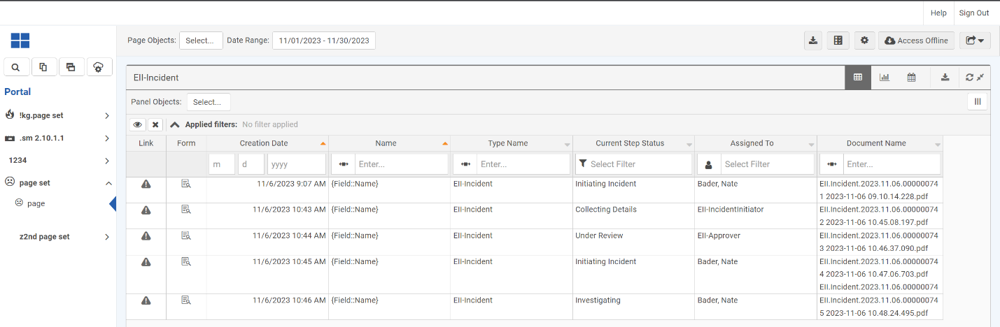
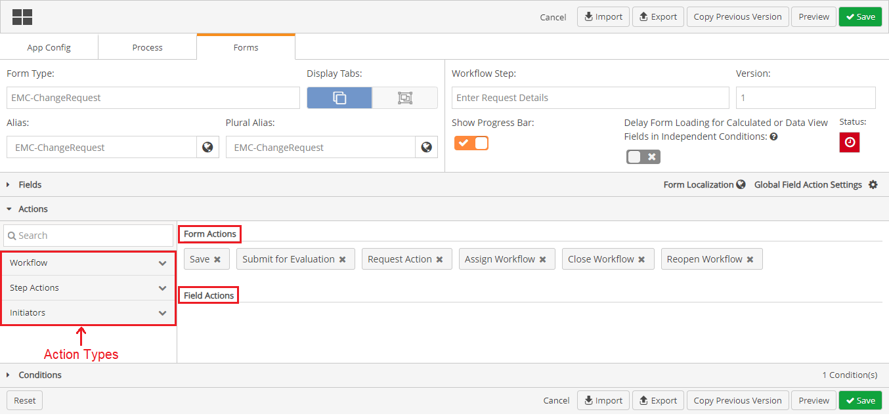
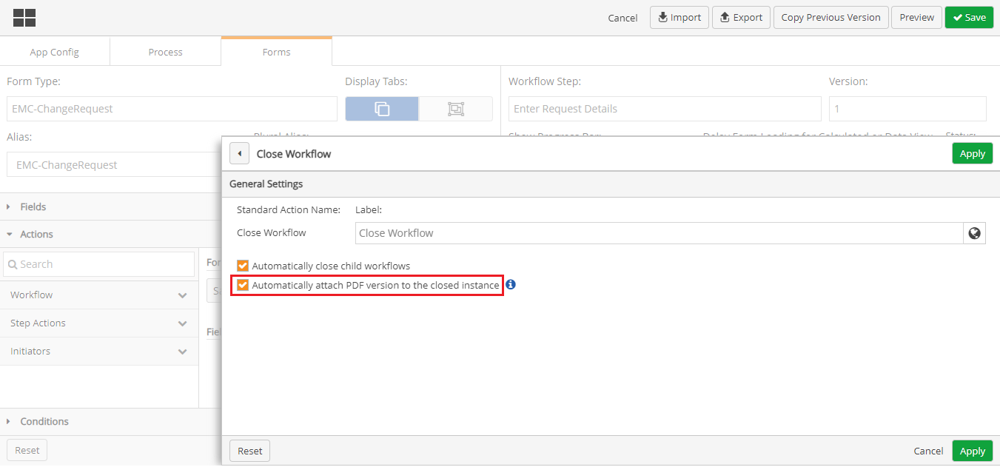

By enabling PDFs to automatically attach to closed workflows, it provides for a seamless experience to the end user in which the system will attach the completed pdf automatically to a workflow step when the user closes the workflow. If the workflow is reopened, then closed again, an additional pdf to the Workflow instance will be added.
This feature can be added to one workflow step at a time. If you would like to add this feature to all or several workflow steps, you will have to go into each workflow step individually and select this option on the Close Workflow window.
PDFs that are automatically attached to a closed workflow can be viewed in the related portal page within the workflow table.

To Enable PDFs to automatically attach to closed workflows


This feature needs to be enabled on each step of the workflow, where users are allowed to close the workflow.
The PDF will include the print view as it would have been printed on that workflow step. This means field actions will be included but not information from child workflows that was not included in the field action.
If a closed workflow is reopened, the original pdf will remain associated to the workflow instance to document the original closure. Any subsequent closure will generate another version of the PDF. The naming convention of the file name will differentiate the document versions with a time/date stamp.